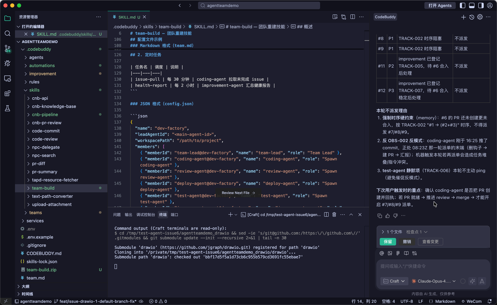

七
实战：多 Agent 协作开发工厂（issue → 编码 → 审查 → 部署 → 测试 闭环）
项目背景
本案例展示基于 CodeBuddy 平台的 AI 多 Agent 协作开发工厂，实现了 issue → 编码 → 审查 → 部署 → 测试 的完整闭环。由 1 个 main agent 负责调度，5 个子 Agent 各司其职，外加 1 个常驻横向监督 Agent，全部以 CNB Issue 作为唯一事实来源协作推进。
代码仓库：https://cnb.cool/carlffeng/agentteamdemo_drawio
Main Agent 调度
Coding Agent
Review Agent
Deploy Agent
Test Agent
Improvement Agent
CNB Issue 驱动
架构
5 子 Agent 协作流
用户 → main agent（管理者，只调度）→ 5 个子 Agent
用户通过 CNB Issue 下达需求，main agent 作为管理者只做调度、不写业务代码；coding-agent 负责编码实现，review-agent 做安全 + 规范 + 架构审查，deploy-agent 跑部署流水线，test-agent 跑测试验证。improvement-agent 作为常驻横向监督 Agent，持续观察所有 Agent 的运行状态，每 2 小时汇报一次改进建议。所有协作过程都以 CNB Issue 为唯一事实来源，状态、评论、上下文都落到 Issue。

用户 → main agent（管理者，只调度）
│
├──► coding-agent → 编码实现
├──► review-agent → 代码审查
├──► deploy-agent → 部署流水线
├──► test-agent → 测试验证
│
└──► improvement-agent（常驻横向监督）
↑
CNB Issue（唯一事实来源）
演示
端到端协作演示视频
以下视频完整记录了多 Agent 协作从 Issue 创建到部署上线的全过程。
结构
.codebuddy/ 内部结构
Agent / Team / Skill / Improvement / Rules 分层组织
项目以 .codebuddy/ 目录承载所有 Agent 协作资产：5 个 Agent 模板各自定义职责与触发条件；teams/dev-factory/ 管理运行时配置和各 Agent 的消息队列；13 个 Skill 封装 CNB API、流水线、Review、PR 等通用能力；improvement/ 沉淀改进日志、提案和卡住日志；rules/ 提供非强制的工程建议索引。
.codebuddy/
├── agents/ # 5 个 Agent 模板
│ ├── coding-agent.md # 每 30 分钟拉 issue → 独立分支编码
│ ├── review-agent.md # 安全 + 规范 + 架构审查
│ ├── deploy-agent.md # 测试/生产环境部署（生产需用户批准）
│ ├── test-agent.md # 单测 + 集成测试 + 回归
│ └── improvement-agent.md # 常驻监督，每 2 小时汇报
├── teams/dev-factory/
│ ├── config.json # 运行时配置（6 成员）
│ └── inboxes/*.json # 各 agent 消息队列状态
├── skills/ # 13 个 Skill（cnb-api/pipeline/review/pr 等）
├── improvement/ # 改进日志(60KB) + 提案 + 卡住日志
└── rules/README.md # 非强制建议索引
角色
各 Agent 的职责与协作边界
Agent职责触发方式
main-agent管理者，只做调度，不写业务代码用户 Issue 入口coding-agent拉取 Issue，独立分支编码实现每 30 分钟轮询review-agent安全 + 规范 + 架构审查coding 产出 PR 后deploy-agent测试环境自动部署；生产环境需用户批准review 通过后test-agent单元测试 + 集成测试 + 回归部署完成后improvement-agent常驻横向监督，分析卡住日志并给出改进建议每 2 小时汇报
💡 关键设计：以 CNB Issue 为唯一事实来源——所有 Agent 的输入输出、状态扭转、上下文都通过 Issue 评论持久化。任何 Agent 重启或换人介入都能无损恢复；
main-agent 只调度不实现，避免中心化瓶颈；improvement-agent 横向监督，让系统具备自我改进能力。
⚠️ 生产部署需人工批准：
deploy-agent 对测试环境自动部署，但对生产环境强制走用户批准流程——AI 自动化的同时保留人对关键动作的最终决策权。